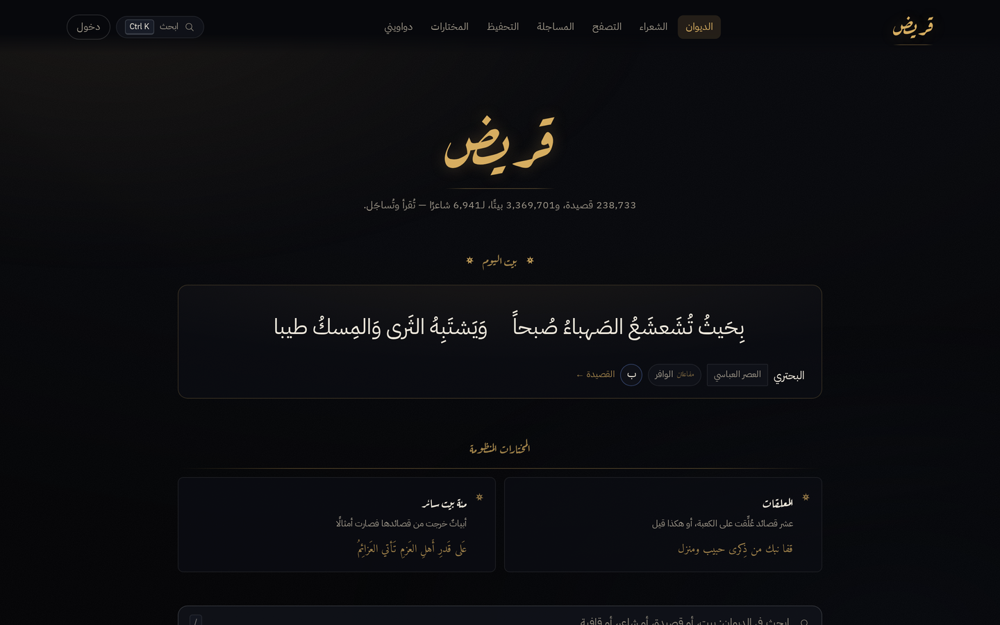
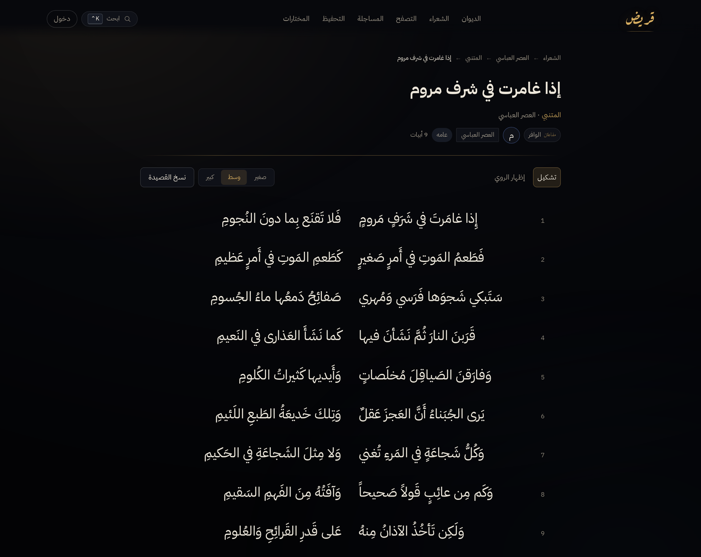
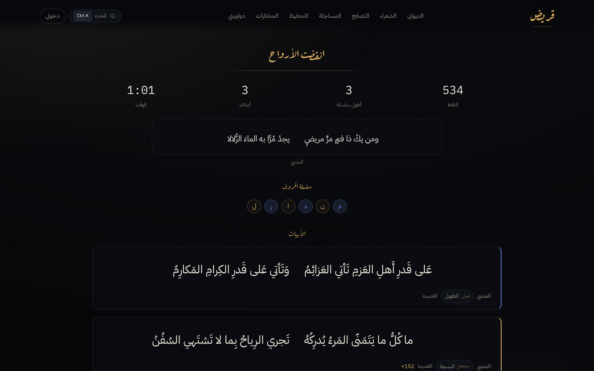
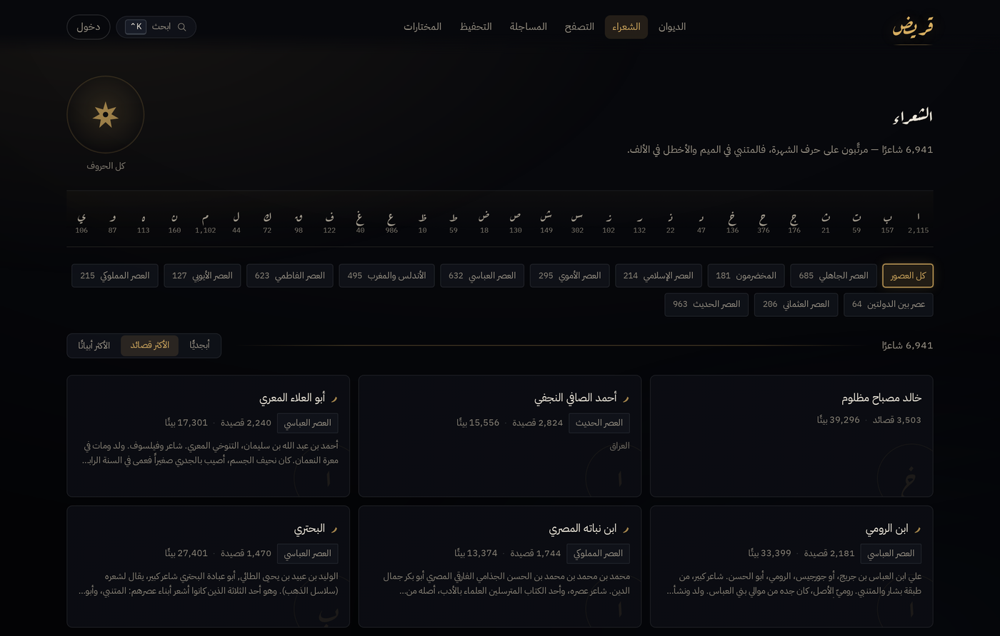
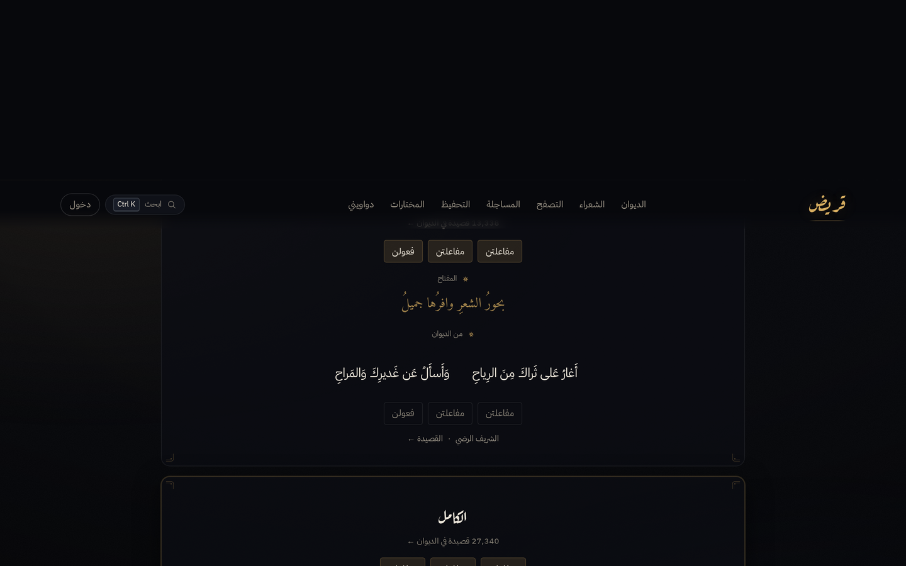
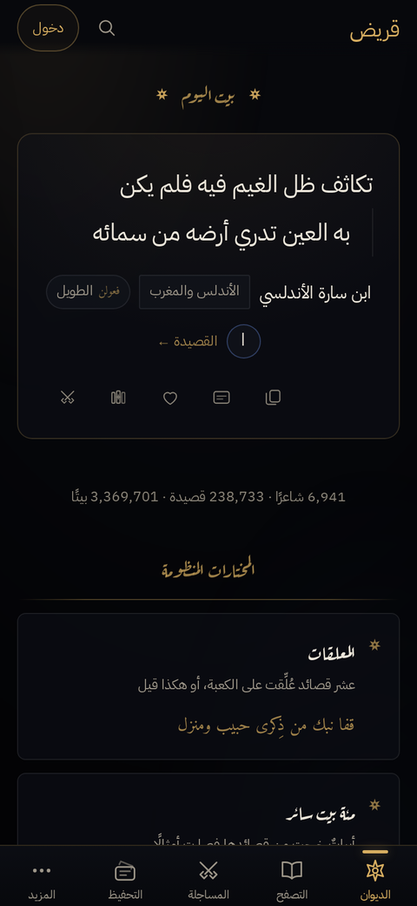
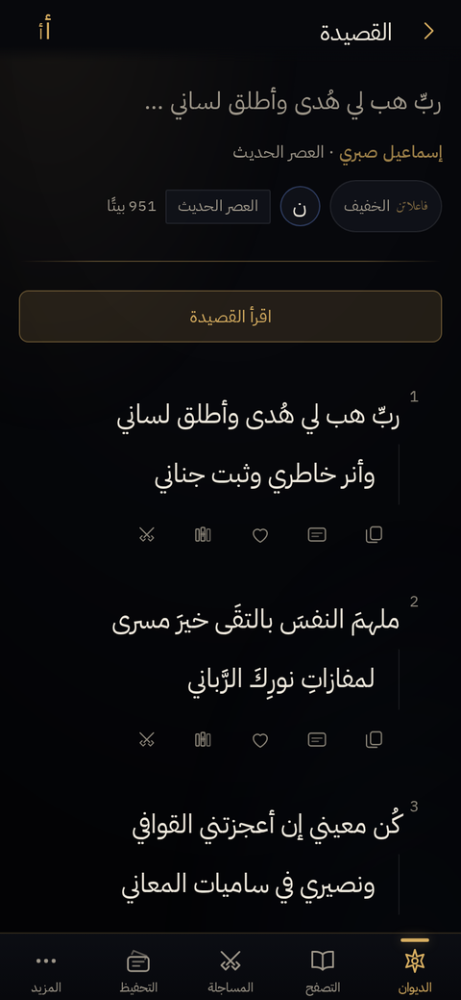
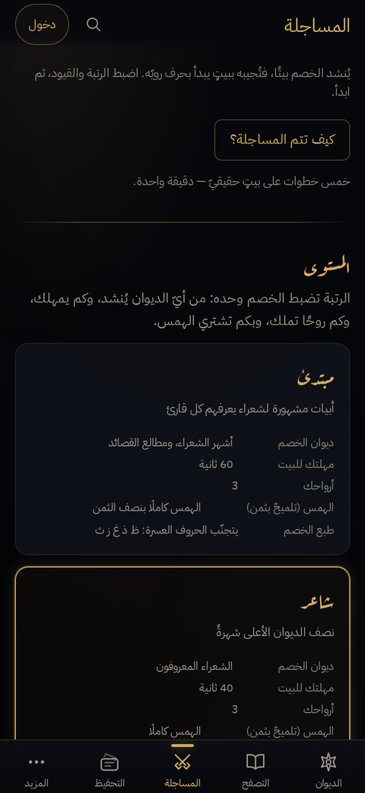

The rule the whole thing turns on
A مساجلة is not trivia. It has one rule, and it is old.
The machine recites a بيت. You must answer with another بيت — a real one, from the corpus — that starts on the روي of the one you were given: the consonant its rhyme runs on. Not the last letter as written. The روي, peeled of what the قافية hangs off it.
It judges the way the قدماء did and it does not take a near miss. Of the 3.37 million أبيات, 1,713,459 can actually be used this way — a بيت needs both hemistichs and a resolvable روي before the game may ask you to answer it, and the corpus is a scrape, so a great many do not qualify.
What it does
Read
Browse by عصر, بحر, غرض or روي. Open a شاعر's ديوان. Read a قصيدة laid out like a printed page, or in a reading mode where every bar stands down and the أبيات alone run down one measure.
Search
FTS5 across three million أبيات, poets and titles, folded through one Arabic normalizer so a query matches however it was typed — with or without تشكيل, with any of the alif forms.
Duel
A مساجلة against the corpus, scored and timed, narrowed by عصر, بحر or a single شاعر. Or against a friend in a room — the match is decided server-side, so neither client can lie about a بيت.
Keep
المختارات is a ♥ list in your browser, no account needed. دواوين are named, ordered, shareable shelves on an account — and you can play a مساجلة inside one.
Memorise
التحفيظ drills a قصيدة until you hold it, tracking which letters you can reliably answer on and building an arsenal out of them.
On a phone
An Android build from the same codebase — bundled assets, so it opens offline-fast, with the OS share sheet and hardware back wired through.
What it looks like
Dark by design, gold on blue-black ink, the way a ديوان is illuminated.








The same app on a real phone build, not a narrowed window.
What is in the corpus — and what is wrong with it
Honest version, because it changes what you can build on it.
The verses come from arbml/ashaar. قريض ingests, normalizes and indexes it into one read-only SQLite artefact; it does not redistribute it. You build the artefact yourself, and it takes about three minutes.
| Rows read | 254,630 |
|---|---|
| Dropped | 15,891 duplicate قصائد, 6 with no verse at all |
| Kept | 238,733 قصائد · 3,369,701 أبيات · 6,941 شعراء |
| Playable | 1,713,459 أبيات — both halves, and a روي that resolves |
| No metre | 39.8% of قصائد carry no بحر at all |
It is a scrape and it shows. Many titles are simply the مطلع with the تشكيل
stripped, so a قصيدة's "name" and its first line are the same words twice.
Some أبيات lost a hemistich on the way in. قريض works around these rather than
pretending otherwise — and the ones worth knowing before you try to
fix them are written down in the repository's CLAUDE.md.
Run your own
One npm package. Three server dependencies. No server build step.
git clone https://github.com/ZahakJ/qarid && cd qarid
npm install
cp .env.example .env # then set PUBLIC_ORIGIN
# Put arbml/ashaar's parquet files in data/raw/, then:
npm run ingest # ~3 min, ~700 MB peak, 1.6 GB out
npm run dev:server & npm run dev
No corpus to hand? npm run ingest:fixture builds a small one from
the test fixtures in seconds, and everything runs against it.
In production the server binds loopback only and serves the built client
itself, so put a reverse proxy or a tunnel in front for TLS.
deploy/qarid.service is a systemd user unit for exactly
that — no root anywhere.
How it is put together
| Corpus | One read-only SQLite artefact, built in two passes, FTS5-indexed. Opened readOnly so a stray write throws instead of corrupting it. |
|---|---|
| Server | Hono on Node's own node:sqlite. TypeScript run directly — no build. Listen-free app, so tests drive it in-process. |
| Client | Vite + React, hash-routed, right-to-left. Amiri for verse, Aref Ruqaa for display. |
| Shared | One Arabic normalizer, one number formatter, one seeded RNG, and zod schemas that are the single source of truth for everything on the wire. |
| Tested | 1,583 unit and route tests, plus a smoke walk that starts the real server and crosses 29 routes at desktop and phone widths, failing on any console error. |
Licence
AGPL-3.0-or-later. Run a modified قريض as a network service and the licence asks you to offer your users its source. The corpus is the dataset's own, under its own terms; the fonts are OFL.